July 18, 2026
Image and Video Generation at CVPR 2026 (in-person)
Advancing generation around representation, structured control, temporal state, 3D geometry, physical validity, computational cost, and evaluation.
July 18, 2026
Advancing generation around representation, structured control, temporal state, 3D geometry, physical validity, computational cost, and evaluation.
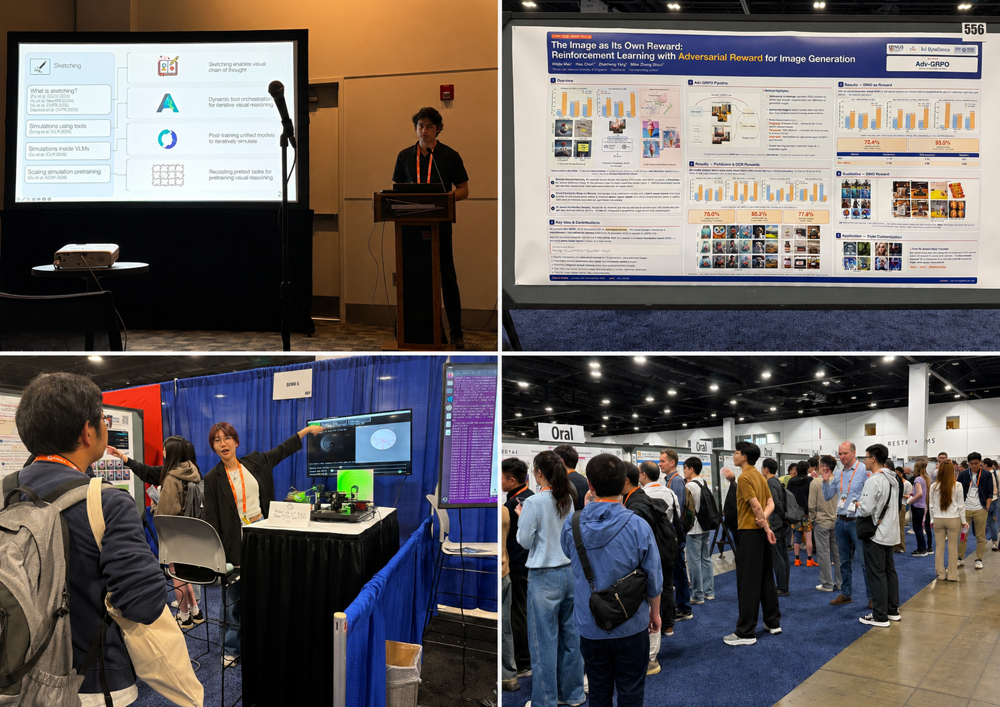
For years, visual fidelity was the dominant yardstick for image and video generation. At CVPR 2026, much of the more interesting work seemed to begin after that threshold.
A generator has to produce the specific composition requested, preserve the relevant objects and relationships as the scene or camera changes, expose more precise controls than a text prompt can provide, and operate within a compute budget that makes the system practical. It also needs an evaluation process capable of distinguishing a correct output from one that merely looks plausible.
I came to these questions through a specific problem. In our SynthSite work, presented at the SynData4CV workshop, we generate synthetic videos of a construction hazard involving a worker under a suspended load. Real examples are rare, dangerous to stage, and difficult to share. But a photorealistic video is still useless if the worker–load geometry is wrong, the load follows an implausible path, or the hazard appears for only one accidental frame.
Looks right and is right are different standards. The space between them is where I found much of the most consequential generation research at CVPR 2026.
The papers below are illustrative rather than exhaustive (Refer here for the fuller list: image generation and video generation). I have organised them around seven shifts: representation, control, temporal and spatial consistency, physical validity, compute, system design, and evaluation.
Most modern image generators operate in a compressed latent space. An autoencoder first converts the image into a smaller representation, the generative model works in that space, and a decoder reconstructs the final pixels.
This makes training and inference more manageable, but the compression is lossy. It also divides representation learning and generation into components that are often trained separately.
PixelDiT removes the pretrained autoencoder and learns the diffusion process directly in pixel space. It divides the work between a patch-level transformer for broader semantic structure and a pixel-level transformer for local texture.
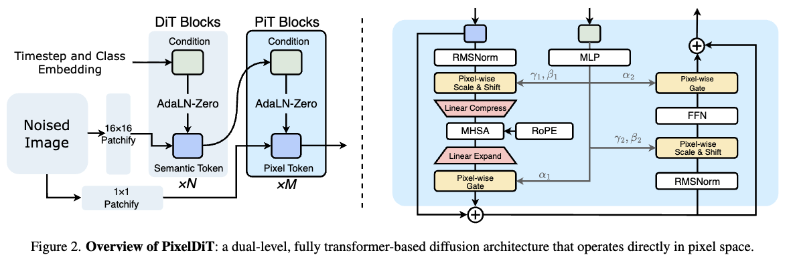
DeCo approaches pixel-space generation by separating frequency components: its diffusion transformer specialises in low-frequency semantic structure, while a lightweight pixel decoder generates high-frequency details conditioned on the transformer’s semantic guidance (lower frequencies broadly carry composition, shape, and large spatial structures; higher frequencies carry edges, textures, and fine details. Generation tends to establish the former earlier in denoising and refine the latter later).
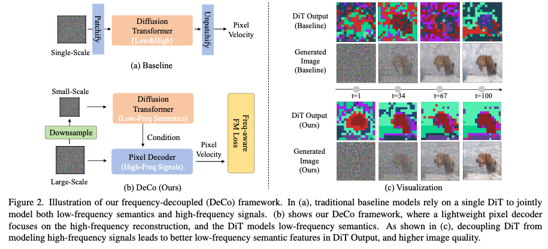
The same coarse-to-fine spectral evolution later provides a useful signal for accelerating diffusion inference through caching.
A model may render several people with high visual quality while duplicating the same face, merging two identities, or generating the wrong number of individuals. DisCo addresses these failures through reinforcement learning. Its reward separately considers identity diversity within an image, repeated identities across generated samples, person counts, prompt alignment, and visual quality.
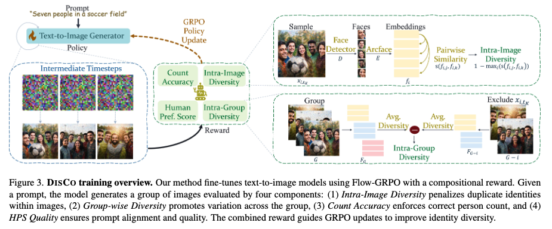
DisCo also illustrates why reinforcement learning is better understood as a method than as a separate generation problem. The underlying problem is compositional correctness; reward optimisation provides one way to target it. The familiar caveat remains: the generator improves only on the properties its reward can measure.
Adding time makes compositional control substantially harder.
A video generator must preserve identity, geometry, motion, occlusion, lighting, camera behaviour, and event order across frames. A single frame can look realistic while contradicting what appeared a second earlier.
Text is a convenient control interface, but it is a poor specification of an object trajectory, an event’s timing, or a camera path. BulletTime makes this limitation explicit by separating the progression of world time from camera pose. The viewpoint can move while the scene slows or remains fixed, instead of treating scene dynamics and camera motion as one entangled process.
This is part of a broader shift in visual generation: moving difficult requirements out of a single text embedding and into more explicit conditions—layouts, trajectories, poses, camera paths, reference identities, scene graphs, or intermediate programs.
In image generation, the structured constraint may be an object count, layout, identity, or attribute binding. In video, the same constraint must remain valid through motion, occlusion, and viewpoint changes.
The number of specialised control methods cuts both ways. It shows genuine progress, but it also shows that general control remains unresolved. One system handles camera motion, another identity, another object trajectories, and another temporally consistent editing. A general-purpose generator still struggles to satisfy all of them at once.
The volume of 3D and 4D work at CVPR—and its presence among the conference awards—made this feel closely connected to the generation story rather than like a separate research thread.
SAM 3D reconstructs object geometry, texture, pose, and spatial layout from a single natural image. Unlike reconstruction from clean, isolated objects, it must infer structure through clutter, occlusion, and incomplete evidence. Its contribution also exposes the 3D data problem: the training pipeline combines synthetic pretraining, human- and model-assisted annotation, and alignment to real-world imagery.
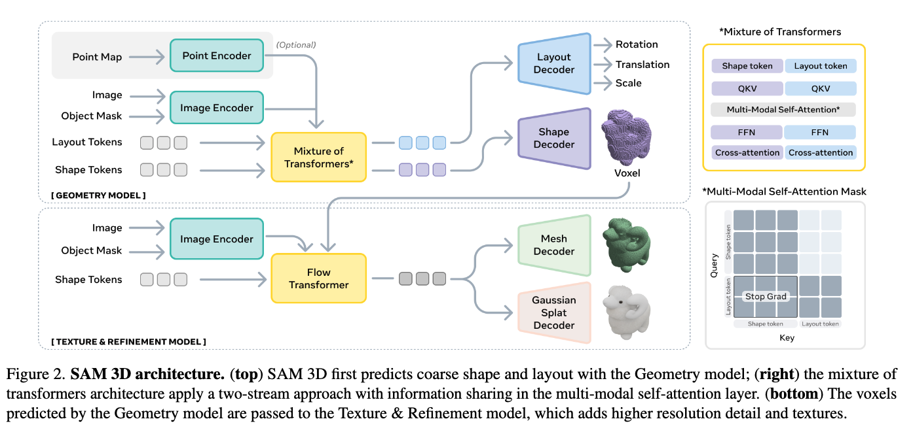
Native and Compact Structured Latents for 3D Generation studies how a generative model should represent complete 3D assets. Its O-Voxel format stores an object’s shape, surface structure, appearance, and material properties using a sparse 3D grid. A compression model then converts this detailed representation into smaller latents that a flow-matching model can efficiently learn to generate.
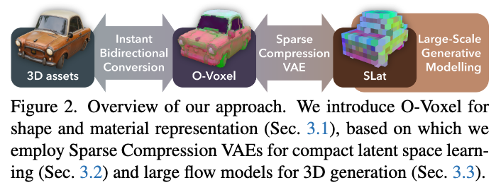
D4RT adds time to this spatial commitment. It reconstructs a changing 3D scene from video. It estimates how far scene points are from the camera, tracks the same points across frames, and separates object motion from camera motion. Instead of reconstructing and storing every 3D point for every frame, the model can answer targeted questions about where a selected point is in 3D at a particular time.
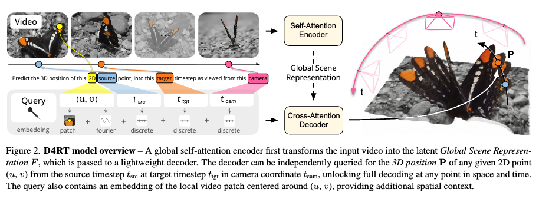
A conventional video generator may produce plausible frames without maintaining any such explicit, queryable geometry. A 4D representation makes a stronger commitment: objects, cameras, motion, and spatial relationships must agree across viewpoint and time.
These distinctions are easy to blur.
Reconstructing an object from an image is different from generating a new 3D asset. Reconstructing an observed dynamic scene is different from generating an action-conditioned environment. Producing consistent novel views is also different from maintaining a state that responds predictably to intervention.
For the same reason, a photorealistic video generator is not automatically a world model. A stronger world model would need to retain state, condition meaningfully on actions, and produce consequences that remain consistent when those actions change. Plausible rollout alone does not clear that bar.
An object may retain its geometry and identity while accelerating implausibly, passing through another object, changing apparent mass, or violating continuity. Better visual quality and stronger multi-view consistency do not automatically provide a reliable model of physical dynamics.
PHANTOM treats this as a separate generation problem. It jointly predicts future visual content and a latent representation of physical dynamics, incorporating information about physical state into generation.
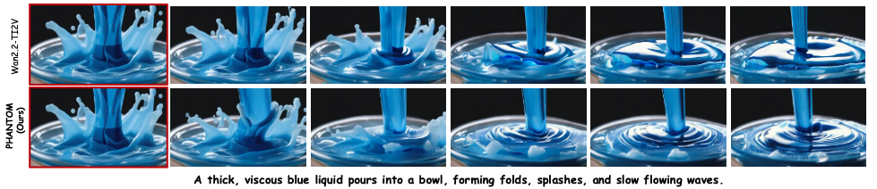
I would still resist calling this general physical understanding. Better performance on physics-aware benchmarks shows closer adherence to the types of dynamics those benchmarks represent. It does not establish that the model has learned a broadly transferable causal account of the physical world.
The more defensible conclusion is that generation research has begun to separate three properties that are often conflated: perceptual realism, spatial and temporal consistency, and physical validity.
That distinction matters for robotics, simulation, and synthetic data. A physically implausible clip may remain acceptable as stylised media, but it can be misleading when used to train or evaluate a system expected to operate in the real world.
As models move toward higher resolutions, longer videos, native 3D assets, and iterative generation pipelines, compute becomes part of the modelling decision.
StreamDiT is designed to generate video continuously rather than producing one fixed short clip. It keeps only a moving window of recent frames in memory, uses local attention to reduce computation, and distils a slower video model into a faster one. The authors report generating 512p video at 16 frames per second on a single GPU.
That is operationally significant, although streaming should not be confused with long-term coherence. A model can continue emitting frames while identities drift, geometry changes, or the scene gradually resets.
At inference time, two other papers move in opposite directions.
SeaCache spends less. It accelerates diffusion by reusing intermediate outputs across denoising steps. The difficult part is deciding when reuse is safe.
SeaCache argues that raw feature differences are a poor signal because they mix meaningful content changes with residual noise. Its training-free cache schedule instead compares spectrally aligned representations, taking into account the coarse-to-fine progression in which lower-frequency structure emerges earlier and higher-frequency detail continues changing later.
VISTA spends more. It converts a request into a temporal plan, generates multiple candidates, compares them, obtains specialised visual, audio, and contextual critiques, rewrites the prompt, and generates again. The underlying video generator is not retrained; the gain comes from search, evaluation, and iteration around it.
VISTA is test-time scaling, not an efficiency method. Generating and evaluating several candidate videos may be reasonable for an offline synthetic-data pipeline or an expensive creative workflow. It is harder to justify for every interactive request.
Taken together, these papers suggest a more useful framing than simply making inference faster. A practical system should reuse computation when its internal state is changing slowly, process history without repeatedly paying for the full sequence, and spend additional computation when control or verification makes the cost worthwhile. Deciding when to save compute and when to spend it is itself becoming part of the design.
A growing share of capability now comes from the components arranged around the generator.
Ditto is a clean example. Instruction-based video editing needs paired examples containing a source video, an editing instruction, and the correctly edited result. Large, high-quality datasets of this form are scarce.
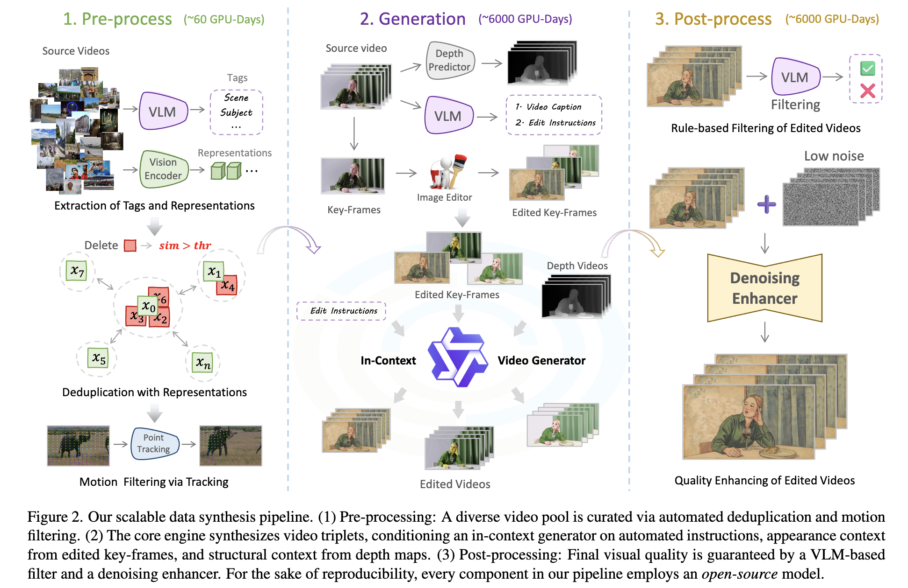
Ditto constructs them through a pipeline that combines an image editor, an in-context video generator, a distilled model, a temporal enhancer, an instruction-generating agent, and output filtering. The authors report investing more than 12,000 GPU-days to create Ditto-1M, a dataset containing one million video-editing examples.
The synthetic dataset is produced through coordinated instruction generation, visual editing, temporal synthesis, enhancement, filtering, and quality control.
This is increasingly what a generative system looks like in practice: planners, structured controls, simulators, reward models, critics, curation stages, and evaluators surrounding a base model.
Some of these systems are described as agentic. That is a reasonable description of the engineering, but it should not imply that the generator itself has independently acquired planning or reasoning. Often, the capability lies in the orchestration.
A generated sample can look convincing and still contribute little to the downstream task. Backgrounds, poses, contextual correlations, distributional coverage, class separability, and difficult edge cases can matter as much as the appearance of the main object.
Beyond Objects: Contextual Synthetic Data Generation for Fine-Grained Classification makes the image-side case through fine-grained classification. Adapting a text-to-image model to a small set of real examples can improve domain relevance but also cause overfitting and reduce diversity. The method explicitly models class-independent contextual attributes, including pose and background, and varies them during generation.
Faithfully reproducing the target object is not enough. The synthetic dataset must also vary the factors that determine what the downstream model learns and whether it generalises.
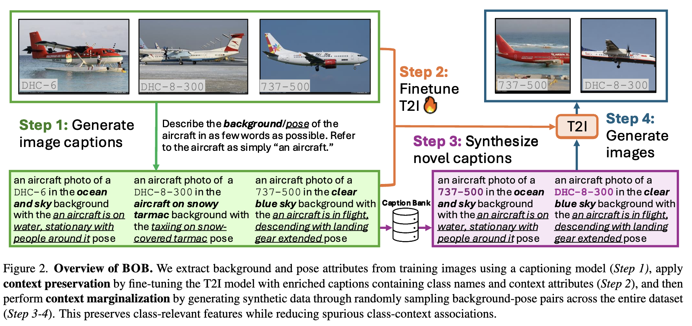
Video adds temporal and relational requirements. For 3D and 4D data, the definition expands again—to geometry, topology, materials, multi-view consistency, editability, temporal correspondence, and whether the environment supports the intended interactions.
Defining quality is only half the problem. The other half is whether the evaluator can measure it.
SLVMEval tests automated long-video evaluators rather than the generators themselves. It constructs high- and low-quality pairs through controlled degradations and asks evaluation systems to rank them.
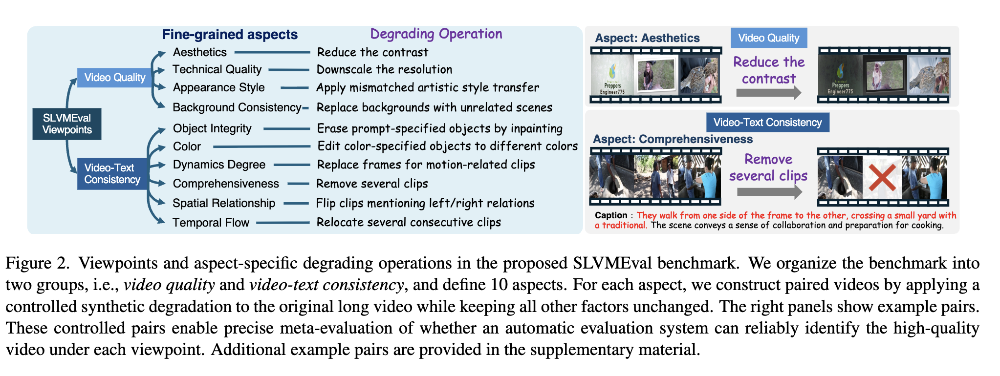
Human evaluators identified the better video with 84.7% to 96.8% accuracy. Automated systems fell below human performance on nine of the ten evaluated aspects, with performance often declining as video duration increased.
A weak evaluator does not merely produce an inaccurate number. It influences which samples enter the training set, which candidate the system retains, and which behaviours the generator learns to optimise.
Generation and evaluation are now tightly coupled. As outputs become more complex, the number of ways they can fail expands. At the same time, improving the generator increasingly depends on evaluators whose own reliability remains uncertain.
The exhibition floor made the systems perspective concrete. The stack surrounding visual generation now spans data construction, simulation, distributed training, model optimisation, serving, evaluation, safety, and monitoring.
A useful system must generate the requested composition, preserve relevant state across viewpoints and time, expose meaningful controls, remain within a workable compute budget, and provide evidence that the result is valid for its intended use.
For synthetic data, the standard is especially demanding. The question is not simply whether a rare scenario can be rendered. It is whether that scenario can be generated with sufficient control and diversity, verified at the level the task requires, and shown to improve—or expose meaningful failures in—the downstream system.